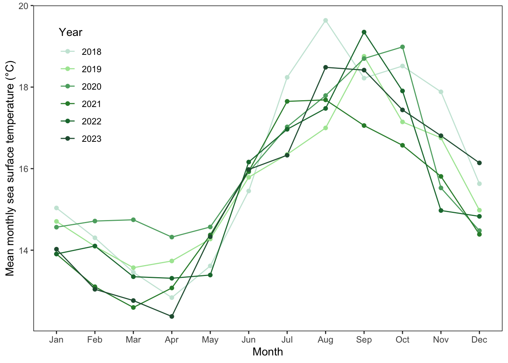
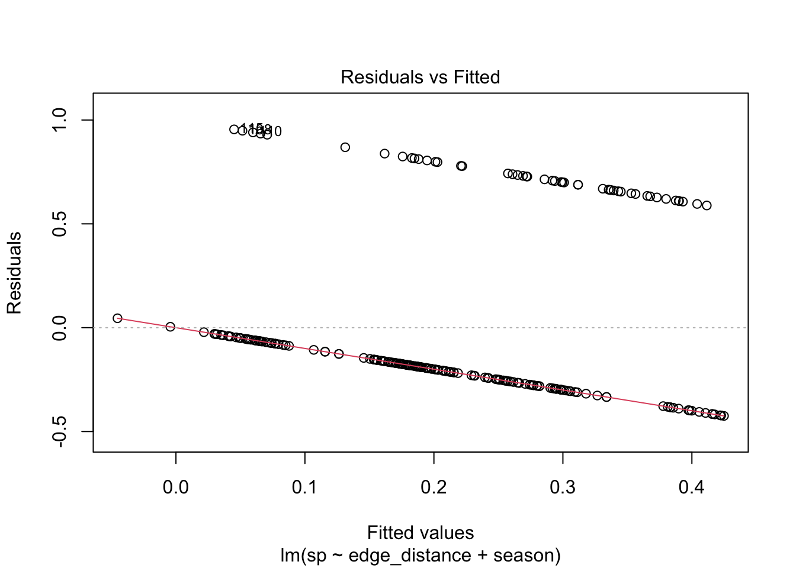
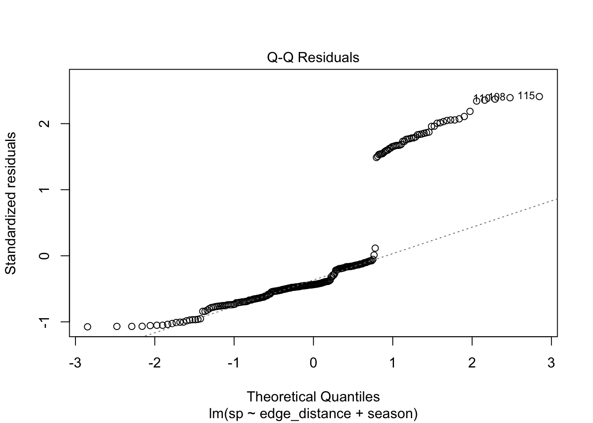
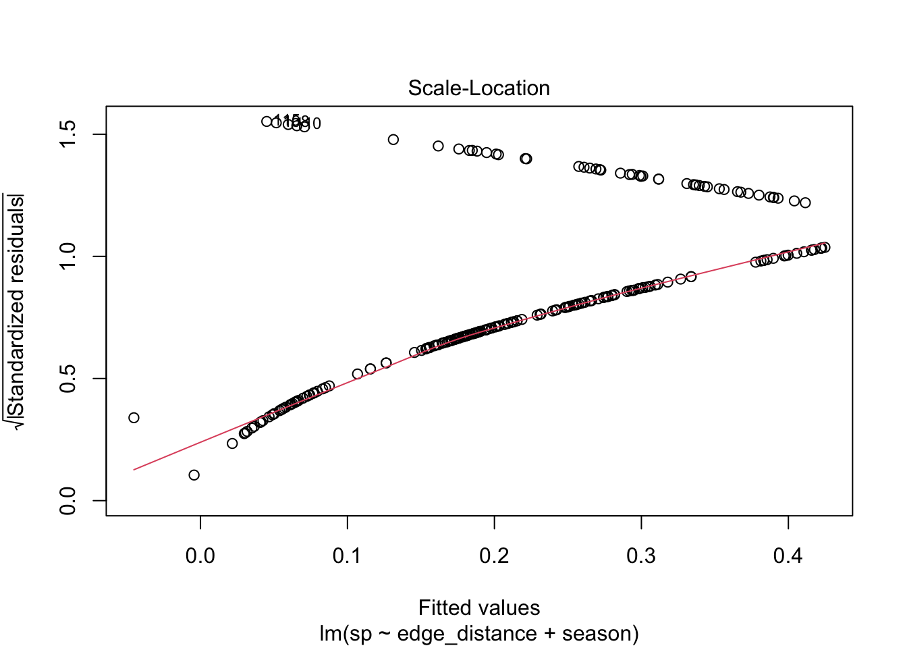

# setting working directory
setwd("/Users/jessrousselle/Desktop/github/ENVS-193DS_spring-2025_final")
# reading in packages
library(tidyverse)
library(dplyr)
library(ggplot2)
library(janitor)
library(MuMIn)
library(ggeffects)
library(flextable)
library(gtsummary)
library(DHARMa)
# reading in data
sst <- read.csv("data/SST_update2023.csv")
nest_boxes <- read.csv("data/occdist.csv")ENVS 193DS Final
GitHub repo: https://github.com/jarousselle/ENVS-193DS_spring-2025_final
Setup
Problem 1. Research writing
a.Transparent statistical methods
In part 1, they used a linear regression. In part 2, they used an ANOVA test.
b. More information needed
My co-worker should also include the results of a Tukey HSD test because this will explain which particular groups are actually different. In addition, they should also include the results of \(\eta^2\) test to show the effect size, or the proportion of variation in the response that is explained by the predictor variable.
c. Suggestions for rewriting
Part 1: The average annual nitrogen load (increased/decreased) as distance from headwater increased (linear regression, FDegrees of Freedom = test statistic, R2 = model fit, p = 0.03).
Part 2: We found a (large/medium/small) difference (\(\eta^2\) = effect size) between sources (urban land, atmospheric deposition, fertilizer, wastewater treatment, and grasslands) in mean nitrogen load (kg year-1) (one-way ANOVA, F(degrees of freedom) = test statistic, p = 0.02, \(\alpha\) = significance level). On average, (source type) tended to have (higher/lower) nitrogen load than (source type) (results from Tukey HSD: average difference in nitrogen load, 95% CI)…(more comparisons between groups can be added based off of Tukey HSD test.)
Problem 2. Data visualization
a. Cleaning and summarizing
# creating a clean data frame
sst_clean <- sst |> # starting with sst object
# making a column to list the year
mutate(year = year(date)) |>
# filtering to only show years 2018-2023
filter(year == 2018 | year == 2019 | year == 2020 | year == 2021 | year == 2022 | year == 2023) |>
# creating a column with the month name
mutate(month = month(date, label = TRUE))
# making the year data a factor
sst_clean$year <- factor(sst_clean$year)
# calculating mean temp for each month each year
sst_clean <- aggregate(temp ~ year + month, data = sst_clean, FUN = mean)
# changing column names
colnames(sst_clean) <- c("year", "month", "mean_monthly_sst")
# displaying 5 rows of data from sst_clean
slice_sample(sst_clean, n = 5) year month mean_monthly_sst
1 2020 Jan 14.56389
2 2021 Jan 13.90625
3 2022 Aug 17.47701
4 2020 Jun 15.91993
5 2023 Jun 15.97853# showing structure of data
str(sst_clean)'data.frame': 72 obs. of 3 variables:
$ year : Factor w/ 6 levels "2018","2019",..: 1 2 3 4 5 6 1 2 3 4 ...
$ month : Ord.factor w/ 12 levels "Jan"<"Feb"<"Mar"<..: 1 1 1 1 1 1 2 2 2 2 ...
$ mean_monthly_sst: num 15 14.7 14.6 13.9 13.9 ...b. Visualize the data
# creating visual of data
# base layer using sst_clean data
ggplot(sst_clean, aes(x = month,
y = mean_monthly_sst,
group = year,
color = year)) +
# setting custom colors
scale_color_manual(values = c("#c9e6d9", "#aae6a1", "#5baa6f", "#2e8b37", "#1b773b", "#255c3f")) +
# adding lines
geom_line() +
# adding data points
geom_point() +
#adjusting theme elements to add border and remove background
theme(panel.border=element_rect(linetype=1,fill=NA),
panel.background = element_blank(),
panel.grid.major = element_blank(),
panel.grid.minor = element_blank(),
legend.position = c(0.1, 0.75)) +
# changing axis labels and legend title
labs(x = "Month",
y = "Mean monthly sea surface temperature (°C)",
color = "Year")
Problem 3. Data analysis
a. Response variable
The response variable is sp, which stands for Swift Parrot. A 1 represents that the nest box is occupied by a Swift Parrot and the 0 represents that it is not occupied by that type of bird or is empty.
b. Purpose of study
Swift Parrots are a critically endangered species, wheras Common Starlings and Tree Martins are competitors of Swift Parrots. This study focuses on the effectiveness of nest boxes in restoring Swift Parrot populations while taking into account competitors.
c. Difference in “seasons”
The study compares two different breeding seasons for Swift Parrots, one in 2016 and one in 2019. The summer of 2016 was the first year that the parrots breed at the study site and the summer of 2019 was when parrots returned to breed at the study site again after a period of absence.
d. Table of model
| model number | season | distance to forest edge | model description |
|---|---|---|---|
| 0 | no predictors (null model) | ||
| 1 | x | x | all predictors (saturated model) |
| 2 | x | season | |
| 3 | x | distance to forest edge |
e. Run the models
# model 0: null model
model0 <- glm(sp ~ 1, data = nest_boxes_clean,
family = "binomial")
# model 1: all predictors (saturated)
model1 <- glm(sp ~ edge_distance + season,
data = nest_boxes_clean,
family = "binomial")
# model 2: season
model2 <- glm(sp ~ season,
data = nest_boxes_clean,
family = "binomial")
# model 3: distnace to forest edge
model3 <- glm(sp ~ edge_distance,
data = nest_boxes_clean,
family = "binomial")f. Check the diagnostics
par(mfrow = c(1,1))
# plot for model 1
plot(simulateResiduals(model1))
# plot for model 2
plot(simulateResiduals(model2))
# plot for model 3
plot(simulateResiduals(model3))
g. Select the best model
AICc(model1, # best model: season and edge_distance
model2,
model3) |>
# arranging output in descending order of AIC
arrange(AICc) df AICc
model1 3 226.3133
model3 2 229.6716
model2 2 236.3744# summary of model 1
summary(model1)
Call:
glm(formula = sp ~ edge_distance + season, family = "binomial",
data = nest_boxes_clean)
Coefficients:
Estimate Std. Error z value Pr(>|z|)
(Intercept) -0.0774902 0.3293209 -0.235 0.813974
edge_distance -0.0020782 0.0006226 -3.338 0.000843 ***
season2019 -0.7791985 0.3390296 -2.298 0.021544 *
---
Signif. codes: 0 '***' 0.001 '**' 0.01 '*' 0.05 '.' 0.1 ' ' 1
(Dispersion parameter for binomial family taken to be 1)
Null deviance: 236.81 on 226 degrees of freedom
Residual deviance: 220.21 on 224 degrees of freedom
AIC: 226.21
Number of Fisher Scoring iterations: 4The best model that predicts Swift Parrot presence in nest boxes as determined by Akaike’s Information Criterion (AIC) includes season and distance to the forest edge.
h. Visualize the model predictions
mod_pre <- ggpredict(model1, # model object
terms = c("edge_distance [all]", # predictors
"season")) |>
# setting custom colors
plot(colors = c("pink", "green"),
show_data = TRUE) +
# cahnging the theme
theme_classic() +
# changing the title and axis labels
labs(title = "Swift Parrot",
x = "Distance from the forest edge (m)",
y = "Probability of box occupancy")i. Figure Caption
Figure 1. Swift Parrot nest box occupancy tends to be higher closer to the forest and in the breeding season of 2016. Points represent observations of nest box occupancy for Swift Parrots (n = 227). Lines represent model predictions (generalized linear regression) for the occupancy of a nest box by a Swift Parrot as predicted by distance from the forest edge (m) and breeding season, which is represented by color (pink: 2016, green: 2019). The ribbon around the lines represent a 95% confidence interval. Data source: Stojanovic, Dejan et al. (2021). Do nest boxes breed the target species or its competitors? A case study of a critically endangered bird [Dataset]. Dryad. https://doi.org/10.5061/dryad.83bk3j9sb. Accessed June 2025.
j. Calculate model predictions
# model predictions for distance 0 and 900 for both seasons
print(ggeffects::ggpredict(model1, terms = c("edge_distance [0, 900]", "season")))# Predicted probabilities of sp
season: 2016
edge_distance | Predicted | 95% CI
--------------------------------------
0 | 0.48 | 0.33, 0.64
900 | 0.12 | 0.06, 0.24
season: 2019
edge_distance | Predicted | 95% CI
--------------------------------------
0 | 0.30 | 0.18, 0.44
900 | 0.06 | 0.03, 0.13k. Interpret results
Swift Parrots tend to occupy nest boxes more often when the box is placed closer to the edge of the forest and the overall probability of occupancy is higher in the 2016 breeding season than the 2019 breeding season. In the 2016 breeding season, the probability of a Swift Parrot occupying a nest box 0 m away from the edge of the forest is 0.48 (95% CI: [0.33, 0.64]) and the probability of a Swift Parrot occupying a nest box 900 m away from the edge of the forest is 0.12 (95% CI: [0.06, 0.24]). In the 2019 breeding season, the probability of a Swift Parrot occupying a nest box 0 m away from the edge of the forest is 0.30 (95% CI: [0.18, 0.44]) and the probability of a Swift Parrot occupying a nest box 900 m away from the edge of the forest is 0.06 (95% CI: [0.03, 0.13]). Swift Parrots are more likely to occupy boxes closer to the forest’s edge because these boxes are easier for them to find.